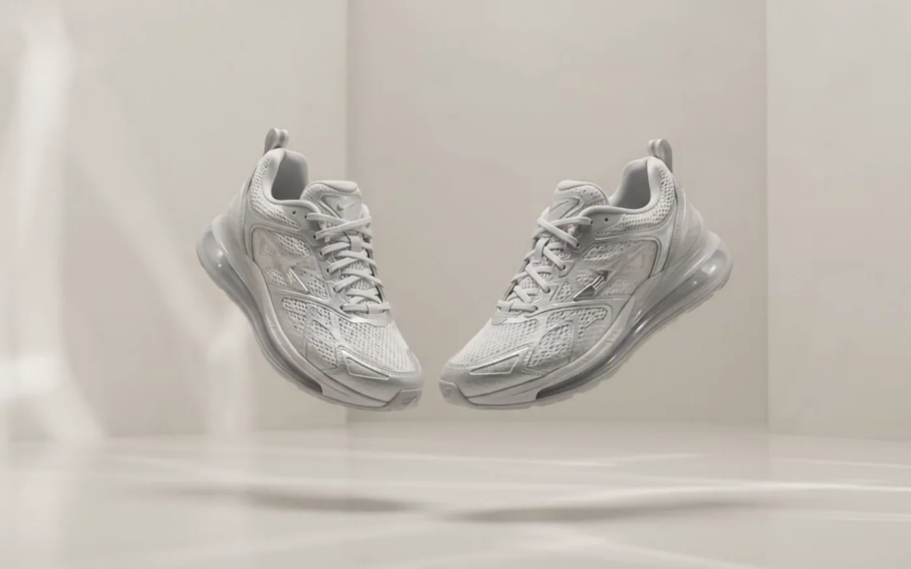
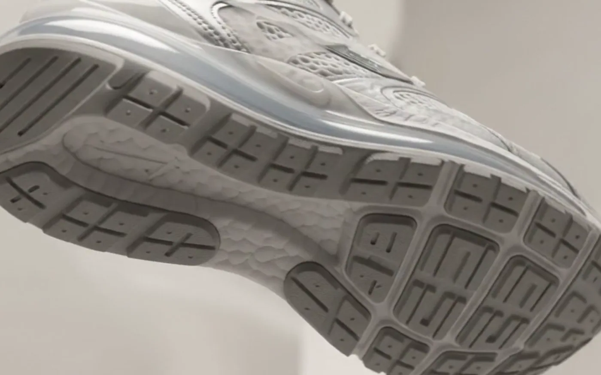
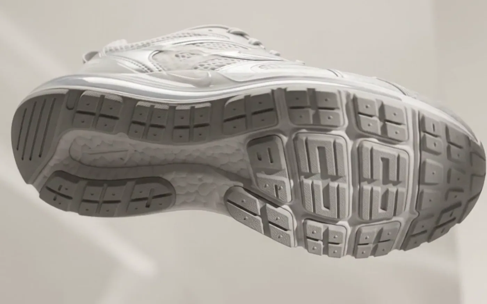
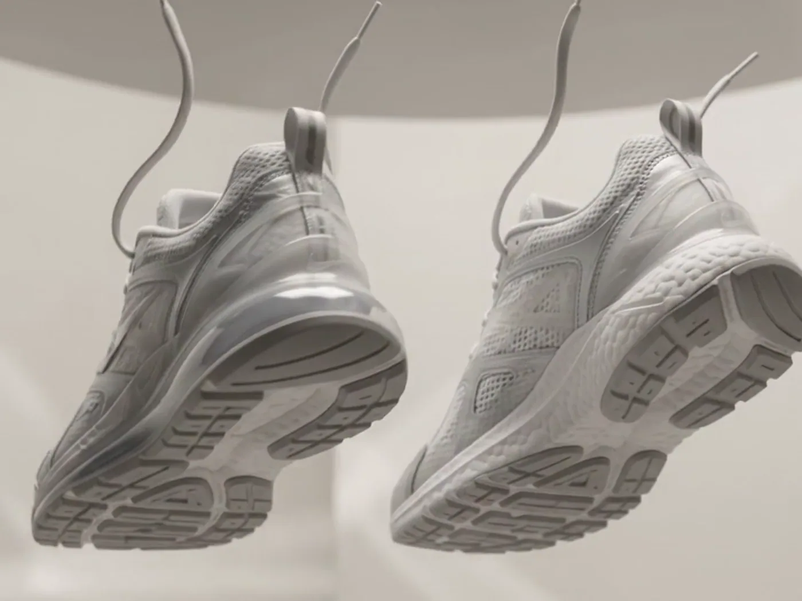
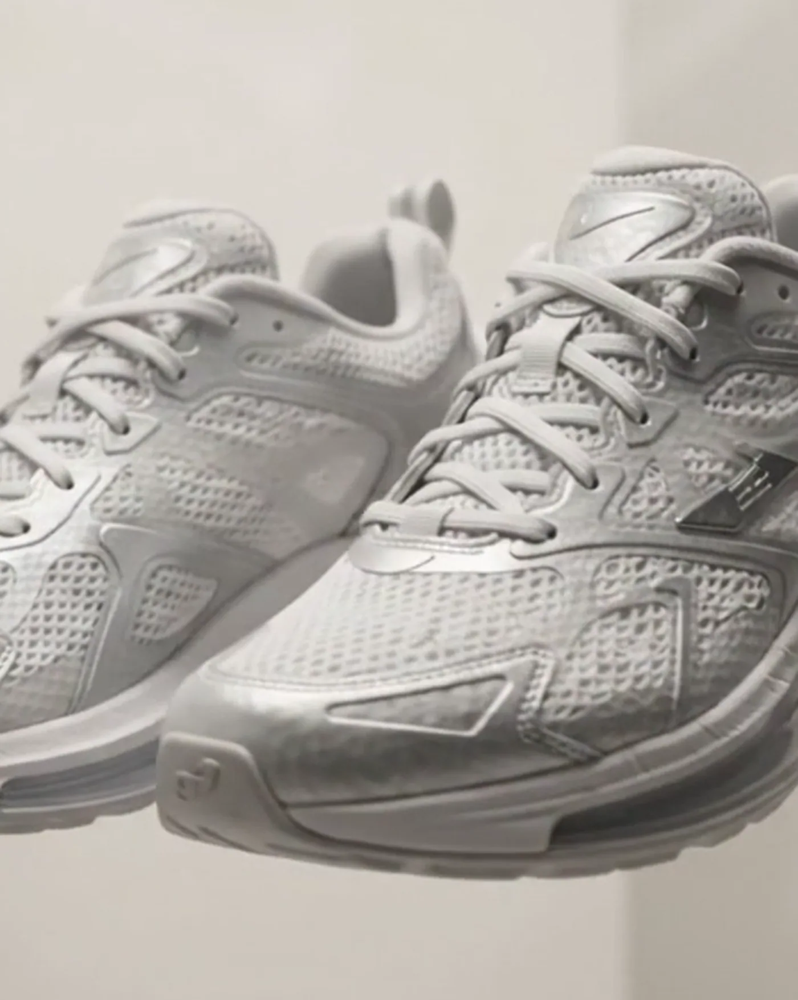
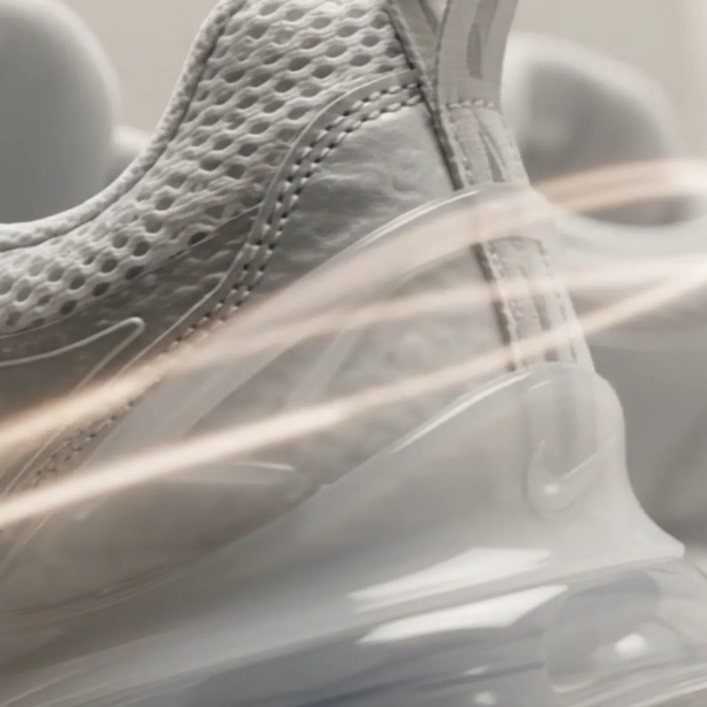

Vantis
Run lighter.
One colourway. No logos, no noise, nothing to distract from the shape.
A single filament, knitted into a whole upper. Nothing to stitch, nothing to peel away.
Zoned rubber, 1.2 mm, placed only where the road actually touches.
Every one of them earning its place on your foot.
Supercritical foam returns eighty-four percent of the energy you put into it.
Vantis
Origin
Our founder finished a marathon in shoes that had done everything right except get out of the way. Four years and eleven lasts later, the 01 is what is left when you remove everything a runner never asked for.

Craft — 01
The upper leaves the machine as one closed piece, zoned tight through the midfoot and open across the toes. No overlays, no glue, and eleven percent of the waste of a cut-and-sew shoe.

Craft — 02
The outsole carries rubber in four zones and nothing anywhere else. Less material under the arch means less weight to lift, two hundred times a minute.

Specifications
| Weight | 190 g / 6.7 oz (US M9) |
| Stack height | 38 mm heel / 34 mm forefoot |
| Drop | 4 mm |
| Midsole | Supercritical PEBA, dual density |
| Plate | Full-length unidirectional carbon |
| Upper | Single-filament engineered knit |
| Outsole | Zoned rubber, 1.2 mm |
| Colourway | Bone white |
| Intended use | Road racing, 5K to marathon |
| Sizes | US M4–14, W5–12 |
“Twenty kilometres in, I stopped noticing them. That is the entire review.”Early tester, Lisbon


